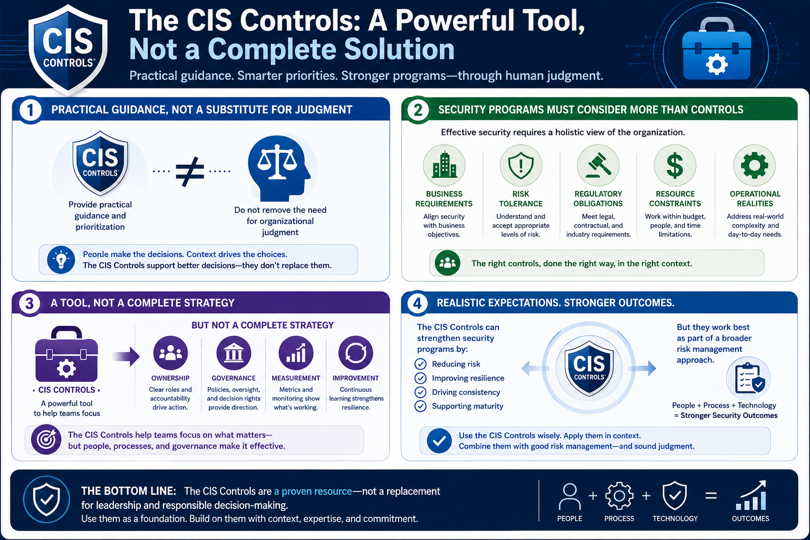

What Are the CIS Controls?
Benefits and Limitations
Connecting to LMS... Progress: in progress
Version 1.0 | Date: 2026-06-16 | Educational guidance for understanding CIS Controls concepts.

Narration
The CIS Controls provide practical guidance and prioritization, but they do not remove the need for organizational judgment.
Security programs must still consider business requirements, risk tolerance, regulatory obligations, resource constraints, and operational realities.
The controls are a tool, not a complete security strategy by themselves. They help teams focus, but teams still need ownership, governance, measurement, and improvement.
Realistic expectations matter. The CIS Controls can strengthen security programs, but they should be used as part of a broader risk management approach.